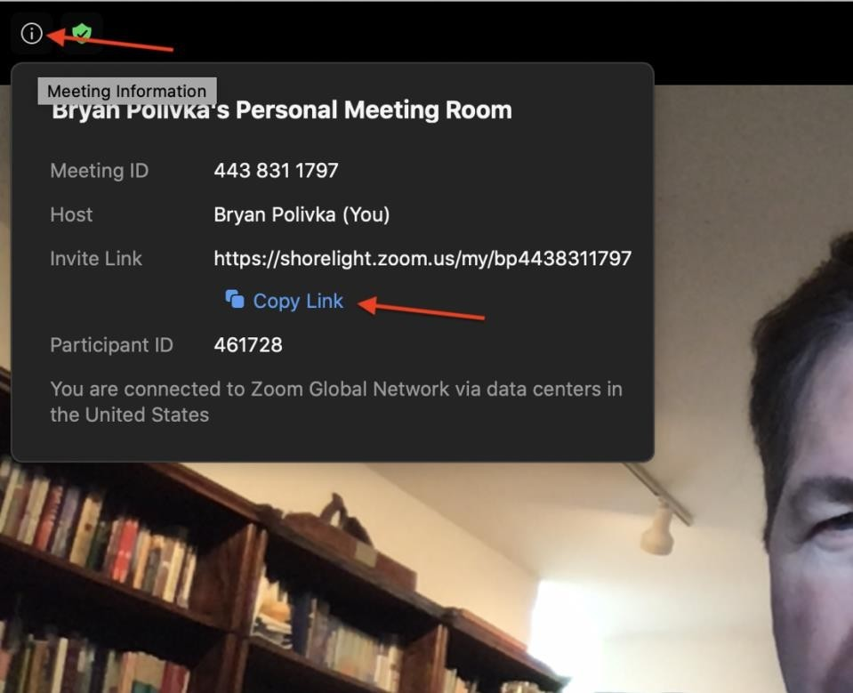
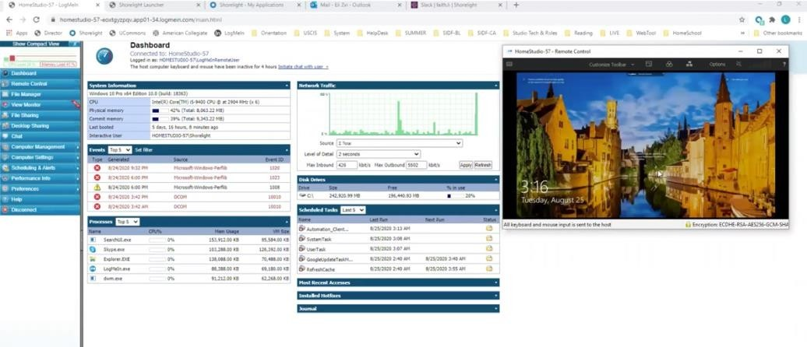
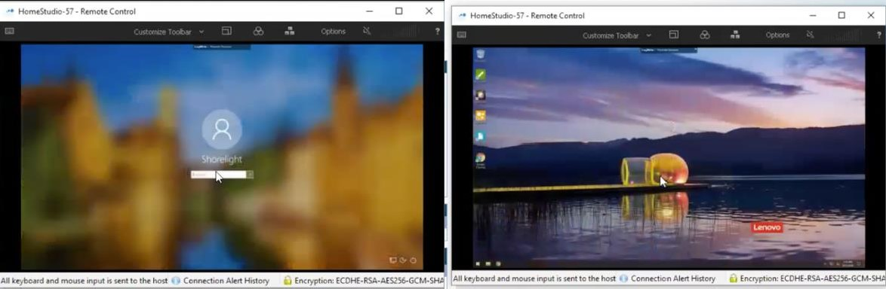
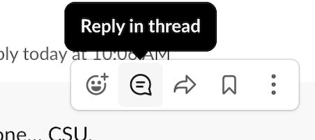
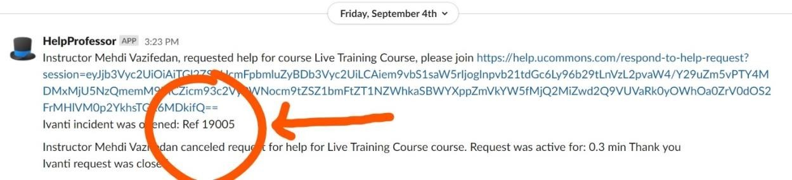

Suggested Scripts for Teaching Facilitators
Step 1
Ask: "Hello professor. I'm [first name] your Teaching Facilitator. How can I help?"
Step 2
Listen: During the explanation of the issue, check for understanding of the basic issue. "To be sure I understand, you are unable to, is that right?"
Ask the professor to share screen with you. "Could you please share your UCommons/Whiteboard [wherever the problem is] with me?"
Ask follow-up questions that require statements of observable facts. Examples:
- "What do you see when you click that?" NOT "What happens if you click that?"
- "Did you click the 'Join Zoom' button?" NOT “How did you get into Zoom?"
- "What did the error message say?" NOT “What error message did you get?"
- "Do you see the blue 'Live Lecture' button now?" NOT "Are you on the home page?"
- "What Lesson Number is showing on your screen?" NOT "Which lesson are you joining?"
Step 3
Plan: State out loud exactly what you are going to do.
Okay, I am going to...
- "step away for just a moment to see if I can find a solution. Is that okay with you?"
- "ask you to close and reopen Zoom, then click Join Zoom again."
- If you are leaving to research or escalate, follow the [problem escalation procedure]
Step 4
Solved: When able to resolve:
Confirm that the issue is resolved. “Did that help?”
Always close with:
- "Is there anything else I can do?"
- If no: "Great! Thank you."
- if yes: "How can I help?"
Complete your notes in slack: reply in the thread e.g. "Prof can't see students. Solved."
Unsolved: When unable to resolve
Confirm that the issue cannot be resolved during the Live Lecture.
"Unfortunately, this is not something we can resolve during class. I will escalate this and we will resolve this as soon as we can."
Step 5
If you need to escalate:
Ask the Instructor: if you can take a moment to research the problem. "Would it be all right if I take a few moments to research this?"
Immediately click on the information icon at the top left corner of the zoom meeting window.

Click "Copy Link" to copy the Zoom url with password to your clipboard
Stay in the Zoom meeting on Mute with camera off
Look through this and other documentation carefully, using keyword search.
If you cannot find a solution within one minute
- Tag a TF Manager in SLACK and add a note about the issue.
- Paste the Zoom link you copied
- Inform instructor that help will arrive shortly
- Stay in the Zoom meeting until help arrives and the resolution is complete.
- After the issue is resolved and the manager leaves, thank the instructor for their patience and ask if there is anything else you can do.
Procedures to set up Home Studio
Home Studio is the screen where instructors are able to see students who have joined the live lecture. The students will always show up in the same spot. When instructors use lecture model on UCOMMONS, the screen they see will mimic HomeStudio. When they click on a student on through UCommons, the student's video will be full screen on the HomeStudio screen as well.
Procedures:
- Step 1: Login LogMeIn and director.shorelight.com. Director will show which HomeStudios are to be used today.
- Step 2: Go to LogMeIn and find that HomeStudio. Enter computer access code and login. The screen will look like the following:

- Step 3: Remote control the Home Studio by swiping up and typing in password.

- Step 4: Go to start => settings => system => sound => manage sound devices. Make sure that all of these are disabled. (e.g. speaker, microphone)
- Step 5: Go back to Director and start the Home Studio 60 to 90 minutes before the lecture. (you can ignore the error for sound and microphone disabled)
- step 6: Unless swamped by other calls, pop-back in on lessons to see if the students have populated the HomeStudio screen, thus confirming accurate launch.
- Step 7: When the class is about to finish, go to LogMeIn to check if the meeting is finished. If it has, end the HomeStudio on Director, click disconnect on LogMeIn and close the remote control window.
Important Notes:
If the Home Studio is turned off but the lecture is starting soon, find the course and contact information of the professor. Text message "Hi This is xxx from shorelight. We are going to launch your Home Studio for your courses shortly. I can see that your system is not turned on. Could you please turn on your system and connect to the internet at least 30 mins before the class so that we can get in and make sure everything is ready. Thank you and have a nice day."
If you found the professor is using Home Studio computer when you are trying to launch, use the chat function at the tab bar ("Options" => "chat")

Type in "Hello professor, we are about get ready to launch your Home Studio for your class." See if they could close the windows and let you launch the Home Studio.
Incident Close-out Procedures
These are the procedures and options for closing out an incident.
Step 1: Track issues as they develop using the “reply in thread” function of Slack

Step 2: If the incident is fully resolved, type in the word CLOSED in all caps at the end of the thread, followed by @[Ivanti TF]
- Example: CLOSED @johndoe
- Eli will designate the TF responsible for entering the information into the Ivanti incident tracking software
- The designated Ivanti TF will also need to add the Ivanti incident (reference number can be found in the initial automated request for help entry, see image below):
- Basics of the issue
- Resolution of the issue
- TF name (TF who annotated)
Example: Home Studio not connected to web. CLOSED @dylan.smith

Step 3:If the incident is not fully resolved, then before the TF (or TF Manager, if it has been escalated) moves on to any other incident, type the word OPEN in all caps at the end of the thread, followed by @[manager]
- If TF, show the manager |
Example: Home Studio not connected to web. OPEN @benpincus
- If TF Manager, show to Eli |
Example: Home Studio not connected to web. OPEN @benpincus @eli
- TF Managers will look for OPEN incidents during the day and, at the end of the day, take other actions as necessary to resolve the issue.
Step 4: If the incident includes a component that needs resolution elsewhere, type the word HANDOFF in all caps at the end of the thread, followed by to whom it was sent:
- Example: Instructor cannot find handout. HANDOFF @victoria rath (on-live lecture Canvas/UCommons issue)
- Example: Home Studio keeps crashing. HANDOFF @roman.burdakov (engineering, software issue)
- Example: HomeStudio won’t power on. HANDOFF @jeremy.busey (hardware issue)
{kind=link}
{kind=link}
{kind=link}
{kind=link}
{kind=link}